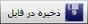
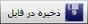

برای مشاهده این صفحه از قسمت تنظیمات روی «صفحه تنظیمات خرید و فروش» کلیک کنید.
همانطور که مشاهده می کنید این صفحه دارای چهار تب «اطلاعات پایه»، «عملیات خرید و فروش»، «صدور و ویرایش سند» و «چاپ سند» می باشد که با انتخاب هرکدام صفحه مربوطه نمایش داده می شود، در شکل بالا تب«اطلاعات پایه» انتخاب شده است.
با توجه به شکل بالا، از این بخش می توانید اطلاعات پایه همچون عملیات خرید و فروش، پارامتر های آن ها و مبناهای عملیات را که به صورت فایل آماده در نرم افزار قرار گرفته است را توسط گزینه
 خواندن از فایل نمایید. همچنین می توانید عملیات تعریفی خود یا تغییرات اعمال شده در لیست عملیات خرید و فروش را با استفاده از گزینه

در یک فایل xml ذخیره نمایید.
خواندن از فایل نمایید. همچنین می توانید عملیات تعریفی خود یا تغییرات اعمال شده در لیست عملیات خرید و فروش را با استفاده از گزینه

در یک فایل xml ذخیره نمایید.
توضیحات موجود در صفحه درباره کاربرد این صفحه کامل می باشد. در واقع شما در این قسمت می توانید تنظیم کنید که فرمول های مقادیر پس از صدور اولین سند خرید و فروش قابلیت ویرایش شدن داشته باشند یا خیر.
با انتخاب تب «صدور و ویرایش سند» از صفحه تنظیمات خرید و فروش پنجره ی زیر نمایان می شود.

در این صفحه پنج قسمت وجود دارد که توضیحات کافی در هر قسمت بیان شده است، بعد از مطالعه هر کدام می توانید با انتخاب یکی ازگزینه ها تنظیمات را به دلخواه انجام دهید.
شکل زیر تب «چاپ سند» را در صفحه تنظیمات خرید و فروش نمایش می دهد:

این صفحه نظر شما در مورد چاپ مبلغ بدهی اشخاص را در انتهای فاکتور فروش بر اساس نمای انتخابی سوال می کند که با توجه به نیاز خود می توانید آن را تنظیم نمایید.